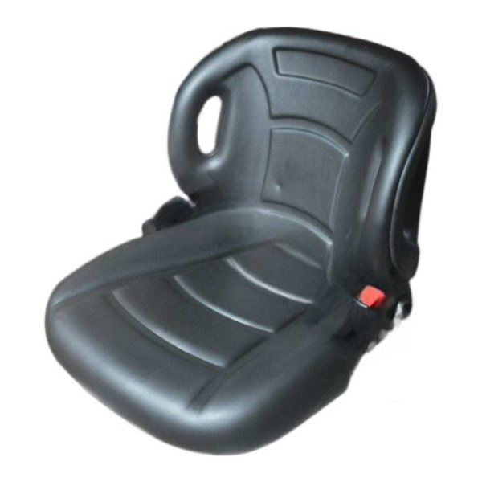

Available
Email for a quote
Toyota 13209-402 Forklift Seat
| OEM part number | 13209-402 |
| Fits | Toyota |
| Models / notes | 7FB10/14/15/18/20/25/30 |
| Use | Forklift |
| Category | Seats |
| Type | Aftermarket replacement |
Send us the quantity you need and we'll reply with pricing, usually within 24 hours. Not the exact part? We can source it. Send the part number or a photo.